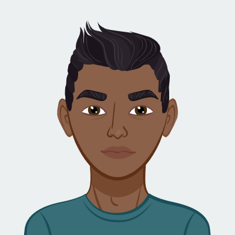

<!DOCTYPE html>
<html lang="en">
<head>
  <meta charset="UTF-8">
  <meta http-equiv="X-UA-Compatible" content="IE=edge">
  <meta name="viewport" content="width=device-width, initial-scale=1.0">
  <link rel="stylesheet" href="./assets/css/reset.css">
  <link rel="stylesheet" href="./assets/css/style.css">
  <title>Document</title>
</head>
<body>
  
</body>
</html>
<section class="nav-bar">
  <h1>Martin Jimenez</h1>
<nav class="nav-list">
  <li><a href="#About me">About me</a></li>
  <li><a href="#Corporate Sales">Corporate Sales</a></li>
  <li><a href="#Certified Medical Assistant">Certified Medical Assistant</a></li>
</nav>
</section>



<section class="contact">
  <h2>contacts</h2>
  <ul>
    <li>Martinmr8703@gmail.com</li>
    <li>610-761-4080</li>
  </ul>
</section>

<section >
    <h2 id="About me"> About me</h2>
    <p>“Open-minded and experienced sales associate with 2+ years of experience with Salesforce.
      I previously worked at Audi Wynnewood where I sharpened my communication skills.
      I am a positive, empathic, and communicative salesperson. Looking for a new position as a front end developer to grow my career.”  
    </p>
</section>

<section class="skills">
  <h2>Capavilities/Skills</h2>
  <ul>
   <h3>Proffessional</h3> 
   <ul>
    <li>Chat Support</li>
    <li>Computer skills</li>
    <li>Active listening</li>
    <li>Teamwork </li>
    <li>Salesforce</li>
   </ul>

   <h3>Personal</h3> 
   <ul>
    <li>Positive</li>
    <li>empathic</li>
    <li>good listener</li>
    <li>communication</li>
    <li>Diplomacy</li>
   </ul>
  </ul>
</section>

<section class="Education">
  <h2>Education</h2>
  <ul class=""Timeline>
    <li class="event">
      <span class="duration">05/24/2022 - 11/12/2022</span>
      <h3>Full Stack Web Developer</h3>
      <div>UPenn LPS</div>
      <p>Browser Based Technologies
        • HTML5
        • CSS
        • Responsive Design
        • CSS Frameworks (Bootstrap, Materialize)
        • JavaScript
        • jQuery
        • Handlebars
        • Cookies,Local Storage
        • React.js
      </p>
    </li>

    <li class="event">
      <span class="duration">2014 - 2015</span>
      <h3>Certified Medical Assistant</h3>
      <div>Star Career Academy</div>
      <p>While attending Star Career Academy i learned how to greet patients and explain treatment procedures to patients
        Taking medical history, room preparation and preparing patients for examination
        Medical terminology, collecting and preparing laboratory specimens
        EKG set up, administering vaccines, filling patient medical records.
      </p>
    </li>
  </ul>  
</section>

<section class="Experience">
  <h2>Experience</h2>
  <ul class="Timeline">
    <li class="Event">
      <span class="duration">2022- Present</span>
        <h3 id="Corporate Sales"> Corporate Sales</h3>
        <p>Wonderware North</p>
        <p>Our portfolio includes world-leading Wonderware SCADA software for Monitor & Control, 
           MES solutions for Performance, Operations, and ERP integration, a rich Asset Management toolset,
           and AVEVA's comprehensive Engineering Design suite. Identifying and educating prospective customers while supporting existing clients 
           with information and assistance that relates to products and services.
          </p>
    </li>

    <li class="Event">
      <span class="duration">2015- 2021</span>
        <h3 id="Certified Medical Assistant">Certified Medical Assistant</h3>
        <p>Norristown REgional Health Center</p>
        <p>Work with a family doctor as a Medical Assistant. I greet patient and present myself as the MA. Patient 
          must be properly Identified with correct information. My duties are but not limited to taking Vitals, 
          Chief Complaint, History, laboratories, scheduling appointment, and setting up rooms for Physical 
          Exam/GYN Exam. I work with the doctor to make sure patient understands treatment procedures. I also 
          serve as an interpreter to Spanish speaking patients.
          </p>
    </li>
  </ul>
</section>

